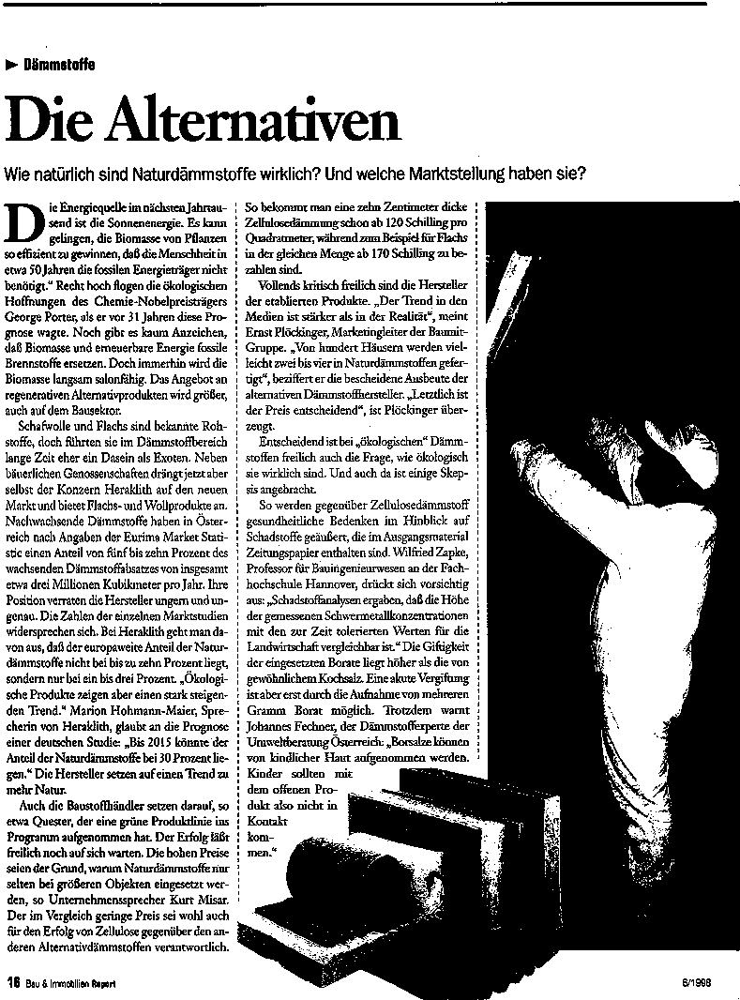
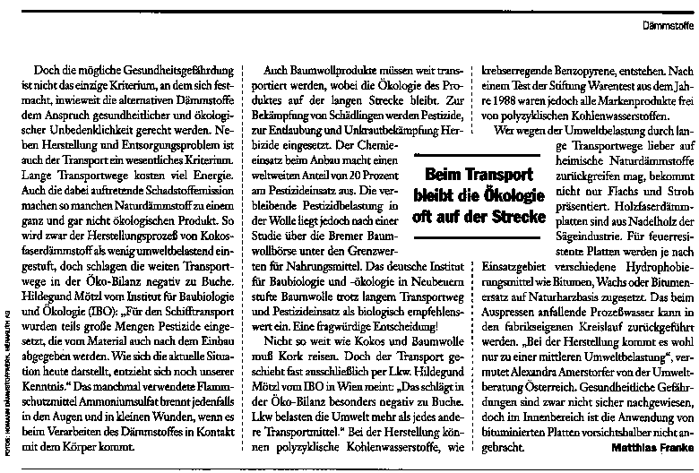

Die regenerativen Alternativen
Wie natürlich sind die Naturdämmstoffe?
"Die Energiequelle im nächsten Jahrtausend ist die Sonnenenergie. Es kann gelingen, die Biomasse Pflanzen so effizient zu gewinnen, daß die Menschheit in etwa 50 Jahren die fossilen Energieträger nicht benötigt." Recht hoch flogen wohl die ökologischen Hoffnungen des Chemie-Nobelpreisträgers George Porter, als er vor 31 Jahren diese Prognose wagte. Noch gibt es kaum Anzeichen, daß Biomasse und erneuerbare Energie fossile Brennstoffe ersetzen. Doch immerhin wird die Biomasse langsam salonfähig. Das Angebot an regenerativen Alternativprodukten wird größer, auch auf dem Bausektor.
Der Dämmstoff Kork und die schon länger eingesetzten Zellulosedämmstoffe bekommen Konkurrenz. Schafwolle und Flachs sind bekannte Rohstoffe, doch führten sie im Dämmstoffbereich eher ein Dasein als Exoten. In Osttirol und Oberösterreich wird durch die Dämmstoffproduktion Schafbauern ein Markt erschlossen, im Waldviertel drängt eine Flachsbauerngenossenschaft in den neuen Absatzbereich. Selbst der Konzern Heraklith sucht seine Position auf dem Dämmstoffmarkt zu festigen, indem er Flachs- und Wollprodukte anbietet. Kork, Zellulose, Holzwolleleichtbauplatten, Schaf- und Baumwolle, Holzweichfaser, Flachs und Kokos haben in Österreich einen Anteil von fünf bis zehn Prozent des wachsenden Dämmstoffabsatzes von insgesamt etwa 3.000.000 Kubikmetern pro Jahr. Marion Hohmann-Maier, Sprecherin der Heraklith AG glaubt an die Prognose einer deutschen Studie: "Bis 2015 könnte der Anteil der Naturdämmstoffe bei 30 Prozent liegen." Die Hersteller setzen auf einen Trend zu mehr Natur.
Reste als Rohstoff
Als besonders ökologisch gilt manchem die Verwendung von Rohstoffen, die vormals überflüssige Abfallprodukte waren. So werden für die Herstellung des Flachsdämmstoffes die Kurzfasern verwendet, welche bei der Produktion von Leinen anfallen. Nach der Reinigung und der Trennung in Einzelfasern werden sie mit bis zu 20 Prozent stützenden Polyesterfasern vermischt. Zum Schutz gegen Brand und Schädlinge wird maximal zehn Prozent an Bor- oder Ammoniumverbindungen zugegeben.
Auch die Kokosfaser war einst ungenutzter Rohstoff. Sie bildet das Gerüst der Fruchthülle der Kokosnuß. Die Fasern werden im Schlamm ausgefault. Gerbstoffe, die dabei entstehen, verhindern das vollständige Verfaulen der Faser und sind für die hohe Beständigkeit gegenüber Mikroorganismen aller Art verantwortlich. Die Fasern werden anschließend gereinigt, getrocknet und zu Platten vernadelt. Eine feuerhemmende Imprägnierung ist mit Ammoniumsulfat und Wasserglas möglich.
Weitere Dämmstoffe aus sonst ungenutztem Material sind diejenigen aus Holz. So werden Holzwolleleichtbauplatten aus gehobelten Fichtenspänen hergestellt, die aus der Durchforstung stammen. Die Späne werden mit einer Calciumchloridlösung befeuchtet und mit dem Bindemittel Zement oder Magnesit in Form gepreßt. Zementgebundene Platten sind stärker wassersaugend als magnesitgebundene. Bei der Verrottung verursachen die Platten keine Umweltbelastung, das enthaltene Calciumchlorid ist gut wasserlöslich. Aufgrund des organischen Kohlenstoffanteils sind die Platten jedoch nicht für Baurestmassendeponien geeignet. Der heimische Verbrauch von Holzwolleleichtbauplatten wurde vom Österreichischen Institut für Baubiologie und -ökologie (IBO) 1993 auf 141.000 Kubikmeter pro Jahr geschätzt. Nach Angaben der Dämmstoffindustrie soll sich die Verwendung 1996 auf etwa 110.000 Kubikmeter belaufen haben. Ein weiteres Holzprodukt sind Holzfaserdämmplatten. Die Verwendung von Holzfaserplatten in Österreich stagniert nach Schätzungen bei 50.000 Kubikmeter jährlich.
Die Fasern und der Krebs
Die Naturdämmstoffe sind besser als andere in der Lage, aufgenommene Feuchtigkeit wieder abzugeben. Ökologisch vorteilhaft ist der im Vergleich zu herkömmlichen Dämmstoff durchweg geringere Energiebedarf zur Herstellung. Doch die wichtigere Vermarktungsstrategie wird Herstellern alternativer Dämmstoffe durch die verbreiteten Ängste vor krebsverursachenden Mineralfasern geboten. Die Meldungen über krebserregende Fasern haben das Vertrauen in die wichtigsten Dämmmaterialien nachhaltig erschüttert. Besonders betroffen waren Matten aus Stein- und Glaswolle.
Ob Fasern Krebs auslösen, hängt von zwei Faktoren ab. Sie müssen eine bestimmte Größe haben, um in die Lunge zu gelangen: eine Faserlänge von fünf Mikrometern und einem Durchmesser von höchstens drei Mikrometern. Zweites Kriterium ist die lange Verweildauer in der Lunge. Diese Biolöslichkeit wird durch den Kanzerogenitätsindex (KI) festgehalten. Danach besteht kein Krebsrisiko, wenn die Fasern einen Wert von KI 40 einhalten. Nach Auskunft von Isolde Elkan, Geschäftsführerin der deutschen Fachvereinigung Mineralfaserindustrie, "haben inzwischen alle Hersteller auf KI 40 umgestellt." Bei Steinwolleprodukten kann dagegen nicht immer mit dem erreichten KI 40 Wert "frei von Krebsverdacht" geworben werden.
Wer der Werbung glaubt, sorgt sich bei den Naturdämmstoffen erst gar nicht um Fasern oder Chemikalien. Aber wie ökologisch, gesund und brauchbar die Alternativen aus der Natur wirklich sind, läßt sich selbst für Experten wie Volker Dettling vom Berliner Umweltbundesamt nicht befriedigend beantworten: "Über viele der Produkte und deren Inhaltsstoffe weiß man so gut wie nichts." Obwohl mehr und mehr Studien vorliegen, ist zum Beispiel noch unklar, welche Belastungen durch Fasern der Zellulosedämmstoffe auftreten.
1993 wurden die Fasern in der Studie des IBO als "nicht lungengängig" bezeichnet. Doch hat inzwischen die Mineralogin und Arbeitsschützerin Margit Fuehres bei der Verarbeitung von Zellulose pro Kubikmeter Raumluft bis zu acht Millionen Fasern der kritischen Größe festgestellt, während es bei Mineralwollematten nur rund 100.000 sind. Wilfried Zapke, Professor für Bauingenierwesen an der Fachhochschule Hannover meint dazu: "Als gesichert gilt, daß die Konzentration der Fasern in der Größenordnung von fünf bis zehn Millionen Fasern pro Kubikmeter liegt. Ob die Papierflocken, die auch einen Anteil an feinstem Holzschliff aufweisen, wie Holzstaub zu bewerten sind, ist ungeklärt." Holzstaub steht im Verdacht, krebserzeugendes Potential zu haben. Nicht umsonst wird also von den Fachfirmen vorsichtshalber eine Feinstaubmaske verwendet. Offenbar bleiben die organischen Fasern auch lange im Körper. So ließen sich bei einer Untersuchung des Fraunhofer-Instituts für Toxikologie und Aerosolforschung in Hannover, die unter anderem der Hersteller Isofloc in Auftrag gegeben hatte, auch nach über einem Jahr noch große Mengen Zellulosefasern in der Lunge von Versuchstieren nachweisen. Diese hatten sich lediglich aufgespalten und somit vermehrt.
Im eingebauten Zustand steht Zellulosefaserdämmstoff aber mit der Raumluft nicht mehr in Verbindung. Für den Nutzer ist demnach mit keiner gesundheitlichen Gefährdung zu rechnen. In der Druckerschwärze sind geringe Mengen von Blei und Cadmium enthalten. Auch mit einer Abgabe dieser Schadstoffe in die Raumluft ist nicht zu rechnen. Die Giftigkeit der eingesetzten Borate liegt höher als die von gewöhnlichem Kochsalz. Eine akute Vergiftung ist aber erst durch die Aufnahme von mehreren Gramm Borat möglich. Borsalze können von kindlicher Haut aufgenommen werden. Kinder sollten mit dem offenen Produkt also nicht in Kontakt kommen.
Der Zellulosedämmstoff
Gesundheitliche Bedenken gegenüber Zellulosedämmstoff wurden auch im Hinblick auf Schadstoffe geäußert, die im Ausgangsmaterial Zeitungspapier enthalten sind. Schadstoffanalysen ergaben, daß die Höhe der gemessenen Schwermetallkonzentrationen mit den zur Zeit tolerierten Werten für die Landwirtschaft vergleichbar ist. Der Wert für Lindan lag unter 0,5 Milligramm pro Kilo. In bezug auf Formaldehyd und PCB wurde Zellulosedämmstoff als unbedenklich deklariert. Das Vorhandensein von Kohlenwasserstoffen wie Benzol oder Toluol konnte ausgeschlossen werden.
Doch die mögliche Gesundheitsgefährdung ist nicht das einzige Kriterium, an dem sich festmacht, inwieweit die alternativen Dämmstoffe dem Anspruch gesundheitlicher und ökologischer Unbedenklichkeit gerecht werden. Auch die Herstellung und das Entsorgungsproblem müssen betrachtet werden:
Zellulosedämmstoff wird aus sortiertem Zeitungspapier hergestellt. 1993 schätzte das IBO den jährlichen Verbrauch in Österreich auf 5.000 Kubikmeter. 1996 wurde er von der Dämmstoffindustrie auf 10.000 Kubikmeter geschätzt. Die Wiederverwertung von Altstoffen wird aus ökologischer Sicht allgemein als günstig bewertet. Seit 1996 produziert die Firma Thermofloc in Kärnten auch aus heimischen Tageszeitungen Dämmstoff. Zellulosedämmstoffe bestehen zu etwa 80 Prozent aus Altpapier; um die erforderliche Brennbarkeitsklasse zu erreichen und als Schutz gegen Schädlings- und Pilzbefall, werden zwölf Prozent Borax und acht Prozent Borsäure beigegeben. Die Borate stammen aus der Türkei oder den USA. Auch deswegen wird der umweltbelastende Transportaufwand von Johannes Fechner, dem Dämmstoffexperten der Umweltberatung Österreich, als mittelmäßig eingestuft.
Die weichen Zellulosefasern sind dampfdiffusionsfähig, feuchtigkeitsausgleichend und gut schalldämpfend. Sie eignen sich zur Dämmung von Hohlräumen zwischen Sparren im Deckenbereich, Balkendecken und Holzständerwänden. Mit einem Gebläse eingebracht, ergibt es eine winddichte Wärmedämmung ohne Verschnitte. Bei sauberer Demontage könnte Zellulosedämmstoff wiederverwendet werden. Es gibt inzwischen sogar ein Gerät, das ein Absaugen der Zellulose ermöglicht. Der Dämmstoff ist nicht deponiefähig, da das Borat in unzulässigen Mengen in das Deponiewasser ausgewaschen würde. Hersteller erklären sich jedoch bereit, ihren Dämmstoff wieder zurückzunehmen.
Die seit 1994 hergestellten Dämmplatten aus können zwischen Dachsparren, bei Außendämmungen mit hinterlüfteter Fassade sowie der Aufsparrendämmung im Selbstbau verlegt werden. Die empfindlich weichen Platten werden mit Jute verstärkt. "Die Jute stammt von alten Kaffeesäcken und Ähnlichem, das ist aus ökologischer Sicht einer der Faktoren, die positiv bewertet werden müssen." sagt Hildegund Mötzl Abteilungsleiterin Produktprüfung des IBO.
Die weite Reise
Lange Transportwege kosten viel Energie. Auch die dabei auftretende Schadstoffemission machen so manchen Naturdämmstoff zu einem ganz und gar nicht ökologischen Produkt. So wird zwar der Herstellungsprozeß von Kokosfaserdämmstoff als wenig umweltbelastend eingestuft, doch schlagen die weiten Transportwege in der Ökobilanz negativ zu Buche. Klassische Kokosanbaugebiete sind Sri Lanka, Indien, Malaysia, Sansibar, Tansania und Kenia. Ungewiß ist eine mögliche Belastung mit Chemikalien für den langen Schiffstransport. Hildegund Mötzl vom IBO: "Für den Schifftansport wurden teils große Mengen Pestizide eingesetzt, die vom Material auch nach dem Einbau abgegeben werden. Wie sich die aktuelle Situation heute darstellt, entzieht sich noch unserer Kenntnis." Das manchmal verwendete Flammschutzmittel Ammoniumsulfat brennt jedenfalls in den Augen und in kleinen Wunden, wenn es beim Verarbeiten des Dämmstoffes in Kontakt mit dem Körper kommt.
Auch Baumwollprodukte müssen weit transportiert werden, wobei die Ökologie des Produktes auf der langen Strecke bleibt. Baumwolle wird in 75 Ländern angebaut und beansprucht ein Prozent der weltweiten landwirtschaftlichen Nutzfläche. Kontrolliert biologischer Anbau erfolgt bislang nur in Ansätzen. Zur Bekämpfung von Schädlingen werden Pestizide, zur Entlaubung und Unkrautbekämpfung Herbizide eingesetzt. Der Chemieeinsatz beim Anbau macht einen weltweiten Anteil von 20 Prozent am Pestizideinsatz aus. Die verbleibende Pestizidbelastung in der Wolle liegt jedoch nach einer Studie über die Bremer Baumwollbörse unter den Grenzwerten für Nahrungsmittel. Das deutsche Institut für Baubiologie und -ökologie in Neubeuern, konnte einen nur sehr geringen Gehalt an Formaldehyd feststellen. Es stufte Baumwolle trotz langem Transportweg und Pestizideinsatz als biologisch empfehlenswert ein. Eine fragwürdige Entscheidung!
Nicht so weit wie Kokos und Baumwolle muß Kork reisen. Doch der Transport geschieht fast ausschließlich per LKW. Hildegund Mötzl vom IBO in Wien meint, "das schlägt in der Ökobilanz besonders negativ zu Buche. LKWs belasten die Umwelt mehr, als jedes andere Transportmittel." Wenigstens der Energiebedarf bei der Herstellung ist sehr gering. Kork wird von der Rinde der Korkeiche geschnitten. Anbaugebiete sind Portugal, Spanien und Nordafrika. Der Rohkork wird getrocknet und in Druckbehältern niedrig überhitztem Wasserdampf ausgesetzt. Dabei expandiert der Kork und wird durch das korkeigene Harz gebunden. Bei der Expansion entsteht Phenol. Wenn der Expansionsprozess bei zu hoher Temperatur falsch gesteuert wird, können polycyclische Kohlenwasserstoffe, wie krebserregende Benzopyrene entstehen. Nach einem Test der Stiftung Warentest aus dem Jahr 1988 waren jedoch alle Markenprodukte frei von polycyclischen Kohlenwasserstoffen.
Bei nicht rein expandiertem Kork setzt man Bitumen zur Imprägnierung ein. Inzwischen wird auch ein Korkschrotprodukt RecyKork aus der Sammlung von Flaschenkorken angeboten.
Die Heimatlichen
Wer wegen der Umweltbelastung durch lange Transportwege lieber auf heimische Naturdämmstoffe zurückgreifen mag, bekommt inzwischen ein breites Produktangebot präsentiert. So ist der Anbau von Flachs aus ökologischer Sicht sogar sinnvoll, da Flachs eine gute Fruchtfolgepflanze ist und keinen Kunstdünger benötigt. Doch läßt der hohe Anteil von Kunststoffen als Stützfaser Flachsdämmstoffe zu einem nicht allzu reinen Naturprodukt werden.
Heimische Rohstoffe werden auch zur Produktion von Holzwolleprodukten benutzt. Eine Umweltbelastung durch die wenig energieaufwendige Herstellung wird vor allem durch die Gewinnung der mineralischen Bestandteile bedingt. Hier ist auch ein hoher Energieeinsatz nötig. Das zweite Holzprodukt sind Holzfaserdämmplatten. Die Weichfaserplatten werden aus Fichten oder Kiefernholz erzeugt. Rohstoffe sind die Resthölzer der Sägeindustrie und Schwachhölzer. Das Holz wird zu Hackschnitzel zerkleinert, thermisch und mechanisch weiter zu einzelnen Fasern aufgeschlossen. Die feinen Holzfasern geben durch Ineinanderschlingen und Verfilzen nach dem Pressen der Platte ihre Festigkeit. Die holzeigenen Naturharze werden durch den Aufschluß mit Alaunzusatz frei und verleihen der Platte nach dem Trocknen die erforderliche Stabilität. Für feuerresistente Platten werden je nach Einsatzgebiet verschiedene Hydrophobierungsmittel wie Bitumen, Wachs oder Bitumenersatz auf Naturharzbasis zugesetzt. Das beim Auspressen anfallende Prozeßwasser kann in den fabrikseigenen Kreislauf zurückgeführt werden. "Bei der Herstellung kommt es wohl nur zu einer mittleren Umweltbelastung." vermutet also Alexandra Amerstorfer von der Umweltberatung Österreich. Auch der von den Herstellern widersprüchlich angegebene Energieverbrauch dürfte nicht allzu hoch liegen. Gesundheitliche Gefährdungen sind zwar nicht sicher nachgewiesen, doch im Innenbereich ist die Anwendung von bituminierten Platten vorsichtshalber nicht angebracht. Rainer Boisits, Autor der Dämmstoffstudie des IBO, meint hierzu: "Bitumen kann krebserregende Verbindungen enthalten und bewirkt bei längerem Hautkontakt Hauterkrankungen." Bituminierte Platten sind auch nicht problemlos zu entsorgen. So dürfen sie nicht im Hausbrand verbrannt werden. Wenigstens die Firma Leitgeb nimmt die Holzfaserplatten zurück und erzeugt daraus neuen Dämmstoff.
Neben Holz- und Flachsprodukten gibt es auch Schafwolldämmstoffe aus Österreich. Das Material für Clima Wool hat allerdings den weiten Weg aus Neuseeland hinter sich. Die Vorzüge der Schafwolle hat sich der Mensch seit jeher für seine Bekleidung zu nutze gemacht. Neben dem guten Dämmwert werden hier vor allem die feuchtigkeitsregulierenden Eigenschaften ins Feld geführt. Im Brandfall werden keine giftigen Gase freigesetzt und der hohe Flammpunkt von 560 Grad Celsius ist für den Einsatz als Dämmstoff günstig. Die Verwendung eines Motten- und Käferschutzes wie Mitin oder Eulan ist Voraussetzung für das Wollgütesiegel. Die Schafwolle wird mit Kernseife gewaschen und mit Soda durchspült. Die Vernadelung zu Vliesen und Filz erfolgt mechanisch, ohne Bindemittel. Daemwool wird fallweise auf Polyamidgitter gearbeitet. Herawool enthält neben Mitin auch Borsalz als Brand- und Insektenschutz. Die von den Herstellern angegebenen Produktionsbedingungen werden allgemein als positiv bewertet. Negative Auswirkungen von Eulan und dem Harnstoffdervivat Mitin auf Umwelt und Gesundheit sind derzeit nicht bekannt.
Bor als Entsorgungsproblem
Von Naturprodukten sollte man eigentlich denken, daß auch ihre Entsorgung nach dem Abriß keine ökologischen Probleme aufwirft. Weit gefehlt, denn neben eventuell vorhanden chemischen Zusätzen macht der Gehalt an brandschützenden Borverbindungen viele Naturdämmstoffe zur Umweltbelastung. Auch wenn die Isocotton GmbH ihren Baumwolldämmstoff für kompostierbar hält, ist die freie Verrottung bedenklich. Denn trotz des relativ geringen Borsalzgehaltes käme es gemäß ÖNORM S 2072 bei einer Kompostierung zu unzulässigen Auswaschungen. Auch bei Flachsprodukten mit Borsalz kommt es bei einer Kompostierung zu einer Belastung des Bodens. Die mit Ammoniumsalzen behandelten Flachsdämmstoffe sind zwar prinzipiell kompostierfähig, doch die enthaltenen Stützfasern aus Polyester verrotten nicht. Inzwischen sind aber manche Herstellerfirmen bereit, ihren Dämmstoff sortenrein zurückzunehmen. Auch Produkte aus Schafwolle sind teilweise borsalzimprägniert und daher nicht kompostierbar. Außerdem sind die Auswirkungen des Mottenschutzes bei der Kompostierung noch nicht bekannt. Einzig unbehandelte Schafwolle kompostiert unbedenklich.
Naturdämmstoffe mögen eine Reihe von Vorteilen bieten. Doch so ökologisch, wie sie verkauft werden, sind sie offenbar nicht. Mangelnde Information und Forschung machen eine Beurteilung der einzelnen Produkte schwierig oder gar unmöglich. Sicherlich wird dies neben dem höheren Preis ein Hindernis bei der Eroberung des Marktes durch alternative Dämmstoffe sein.
Kork
Anwendungsbereich: Kork wird lose als Naturkorkgranulat und als Granulat aus expandiertem Kork angeboten. Bruchkorkplatten bestehen aus reinem, expandiertem Kork. Preßkork mit Bindemittel, Korkstein oder pechimprägnierter Kork wird kaum mehr verkauft. Bevorzugte Anwendungen sind Außen und Innenwände, die Innendämmung bei Wänden gegen Erdreich und ungeheizten Räumen, Schräg- oder Flachdächer, warmseitige Dämmung von Böden über Erdreich und Hohlräumen, Lüftungskanäle und Korkparkett. Bei Isolierungen zwischen Sparren müssen die Ränder elastisch gestopft werden. Korkschrot wird als Schüttung in der Dachschräge, in Decken und Fußböden eingesetzt. Dämmkork wird eingeklemmt, genagelt, gedübelt oder mit Klebemörtel befestigt. Bituminierte Kunstharzgebundene Ware ist nicht mehr käuflich.
Brennbarkeit: normal brennbar B2
Primärenergiegehalt bezogen auf Wärmedurchlaßwiderstand: iedrig
Wärmeleitfähigkeit: 0,04 bis 0,045 W/mK
Wasserdampfdiffusionswiderstandszahl: ,5 bis 30
Dämmwirkung wie 10 cm EPS bei einer Materialstärke von 0 cm
Preis pro m2 für die selbe
Dämmwirkung wie 10 cm EPS: 10 bis 240 öS
Dichte: 70 bis 300 kg/m3
Handelsmarken: Amorim-Isocor, Schicht, RecyKork, u.a.
Holzwolleleichtbauplatten
Anwendungsbereich: Gemessen an der Wärmeleitfähigkeit markiert Holz in etwa den Übergang von den Wärmedämmstoffen zu den anderen Baustoffen. Holzwolleleichtbauplatten werden als Bauplatte, Porenverschlußplatte und in Kombination mit Steinwolle als Fassadenelemte angeboten. Aufgrund der geringen Dämmwirkung ist die häufigste Anwendung, die als Putzträger.
Brennbarkeit: schwer brennbar B1
Primärenergiegehalt bezogen auf Wärmedurchlaßwiderstand: nbekannt
Wärmeleitfähigkeit: 0,076 bis 0,13 W/mK
Wasserdampfdiffusionswiderstandszahl: bis 6
Dämmwirkung wie 10 cm EPS bei einer Materialstärke von 3 cm
Preis pro m2 für die selbe
Dämmwirkung wie 10 cm EPS: 50 bis 575 öS
Dichte: 300 kg/m3
Handelsmarken: Heraklith, Primanit, Lechner, Ideal, Isolith, u.a.
Kokos
Anwendungsbereich: Das Material wird als Filz, Matte und als Platte angeboten. Kokos ist für fast alle Dämmbereiche einsetzbar. Bei Zwischensparrendämmungen ist eine Befestigung nötig, um ein Abrutschen der Matten zu verhindern. Eine Windbremse zwischen innerer Hinterlüftungsebene und der äußeren Dämmstofflage ist sinnvoll, da so ein Auftrieb der Hinterlüftungsebene bei starker Erwärmung des Dämmstoffes verhindert wird. Gute Trittschaleigenschaften prädestinieren latexierte qualitäät zu Einsatz im Fußbodenbereich.
Brennbarkeit: leicht brennbar B3
Primärenergiegehalt bezogen auf Wärmedurchlaßwiderstand: MJW/m2 K (Weiterverarbeitung des Zeitungspapiers zu Dämmstoff)
Wärmeleitfähigkeit: 0,051 W/mK
Wasserdampfdiffusionswiderstandszahl: bis 2
Dämmwirkung wie 10 cm EPS bei einer Materialstärke von 2,5 cm
Preis pro m2 für die selbe
Dämmwirkung wie 10 cm EPS: 120 bis 540 öS
Dichte: 50 bis 140 kg/m3
Handelsmarken: Emfa, Fedema
Flachs
Anwendungsbereich: Flachs ist als Wärmefilz und Rollenware oder Dämmplatte erhältlich. Er eignet sich besonders zur Wärme- und Schalldämmung in Steildächern, Holzbalkendecken und Holzständerwänden, wo keine hohe statische Belastung auftritt. Flachs als Stopfmaterial wird zum Ausstopfen von Fugen und Hohlräumen verwendet. Inzwischen wird ein Produkt zur Auflage auf Akustikdecken angeboten. Flachsfasern dämmen recht gut. Die Fasern sind sehr zugfest, jedoch wenig elastisch und knicken leicht. Je weniger Stützfasern aus Polyster enthalten sind, desto wichtiger ist beim Einbau vorheriges Aufschütteln des Materials.
Brennbarkeit: normal brennbar B2
Primärenergiegehalt bezogen auf Wärmedurchlaßwiderstand: unbekannt
Wärmeleitfähigkeit: l 0,038 bis 0,042 W/mK
Wasserdampfdiffusionswiderstandszahl: 1
Dämmwirkung wie 10 cm EPS bei einer Materialstärke von 10 cm
Preis pro m2 für die selbe
Dämmwirkung wie 10 cm EPS: 170 bis 260 öS
Dichte: 20 kg/m3 (je nach Verabeitung)
Handelsmarken: Thermofloc, Isofloc, Isocell, Climazell, Homatherm (Dämmplatten),
Waldvierteler Flachsverarbeitung
Holzfaserdämmplatten
Anwendungsbereich: Die Platten können im Innenbereich zur trittschalldämmenden Unterbodenkonstruktion, als Fertigelement für Trockenfußböden und zur Zwischenwanddämmung für leicht Trennwände und Schallschutz verwendet werden. Im Außenbereich ist die Dämmung von vorgehängten Fassaden, der Schüttungsschutz bei Kellermauerwerk, Leichtbauaußenwände, Schalung bei Reihenhaustrennwänden, Kältebrückendämmung undn Aufdachdämmung möglich. Die sogenannte Dachdämmplatte kann die Unterdachkonstruktionen aus Holzschalung mit Bitumenpappe ersetzen.
Brennbarkeit: normal brennbar B2
Primärenergiegehalt bezogen auf Wärmedurchlaßwiderstand: niedrig
Wärmeleitfähigkeit: l 0,051 bis 0,056 W/mK
Wasserdampfdiffusionswiderstandszahl: 4 bis 9
Dämmwirkung wie 10 cm EPS bei einer Materialstärke von 11,5 bis 13 cm
Preis pro m2 für die selbe
Dämmwirkung wie 10 cm EPS: 350 bis 460 öS
Dichte: 160 kg/m3
Handelsmarken: Leitgeb, Pavatex, Gutex
Baumwolle
Anwendungsbereich: Baumwolldämmstoff wird als Dämmatte, Dämmzopf, Dämmfilz, Filzstreifen und Zopfwolle angeboten. Die Dämmatte in Dicken von fünf bis zehn Centimetern kann als Zwischensparrendämmung und in Holzständeraußenwänden eingesetzt werden. Weitere Anwendungsfelder sind Akustik-Dechensysteme, Dechen- und Trennwandkonstruktionen. Stopfwolle und Dämmzöpfe werden zum Dämmen von Fugen, Hohlräumen eingesetzt und sollen somit eine Alternative zu Ort- und Montageschäumen bieten. Beim Einbau sind keine Vorsichtsmaßnahmen nötig. Baumwollmatten werden zur leichteren Verarbeitung auch mit mechanisch verfestigter Oberfläche angeboten.
Brennbarkeit: normal brennbar B2 (auch in Brandklasse B1 erhältlich)
Primärenergieverbrauch: 10 Kwh/m3 (Herstellerangabe)
Wärmeleitfähigkeit: l 0,04 W/mK
Wasserdampfdiffusionswiderstandszahl: 1 bis 2
Dämmwirkung wie 10 cm EPS bei einer Materialstärke von 10 cm
Preis pro m2 für die selbe
Dämmwirkung wie 10 cm EPS: 315 öS
Dichte: 20 kg/m3
Handelsmarken: Isocotton
Zellulosedämmstoff
Anwendungsbereich: empfohlene Anwendugbereich sind die Außenwanddämmung innen, Innenwanddämmung, Kaltdachdämmung, Dämmung von Geschoßdecken
Brennbarkeit: normal brennbar B2 (Isofloc B1 erreicht eine Brennbarkeitsklasse von B1)
Primärenergiegehalt bezogen auf Wärmedurchlaßwiderstand: 2 MJW/m2 K (Weiterverarbeitung des Zeitungspapiers zu Dämmstoff)
Wärmeleitfähigkeit: l 0,04 bis 0,045 W/mK (teils von Herstellern mit 0,0375 W/mK angegeben)
Wasserdampfdiffusionswiderstandszahl: 1 bis 1,5 (einige Produkte je nach Verarbeitung auch 2)
Dämmwirkung wie 10 cm EPS bei einer Materialstärke von 10 bis 11 cm
Preis pro m2 für die selbe Dämmwirkung wie 10 cm EPS: 120 bis 170 öS
Dichte: 30 bis 55 kg/m3 (je nach Verabeitung)
Handelsmarken: Thermofloc, Isofloc, Isocell, Climazell, Homatherm (Dämmplatten)
Schafwolle
Anwendungsbereich: Schafwolle wird als Dämmfilz, Matte, Fassaden-Dämmplatte, Trittschal-Dämmplatte, zur Rohrisolierung und als Stopfwolle angeboten. Sie kann als flexibler Dämmstoff zwischen Dachsparren eingebaut werden. Das lose Material wird mit Wasserglas besprüht und verfestigt. Zur Schalldämmung ist Schafswolle ebenfalls geeignet.
Brennbarkeit: normal brennbar B2
Primärenergiegehalt bezogen auf Wärmedurchlaßwiderstand: unbekannt (vermutlich geringer als für andere Naturdämmstoffe)
Wärmeleitfähigkeit: l 0,034 bis 0,037 W/mK
Wasserdampfdiffusionswiderstandszahl: 1
Dämmwirkung wie 10 cm EPS bei einer Materialstärke von 9,5 bis 11 cm
Preis pro m2 für die selbe Dämmwirkung wie 10 cm EPS: 200 bis 300 öS
Dichte: 15 kg/m3
Handelsmarken: Doscha Wolle, Daemwool, Clima Wool, Herawool, Villgrater
Quellen und Bücherliste
- Technische Regeln für Gefahrstoffe TRGS 900; MaximaleArbeitsplatzkonzentration und Biologische Arbeitsstoff-toleranzwerte (MAK-Werte 1993)
- Voss, H.: Untersuchungen zur Styrol-Emission in mitPolystyrol-Hartschaumstoff wärmegedämmten Wohnräumen;Kunststoffe 77/1987
- Binder; K. u.a.: Zusammensetzung der Brandgase organisch-er Materialien im Wohnungsbau-Toxizitätsstudie, Facultas-Verlag Wien 1982
- Pott, F.: Die Faser als krebserzeugendes Agens, Zbl. Bakt.Hyg. B 184 (1987) S. 1-23
- Deutsche Forschungsgemeinschaft: MAK- und BAT-Werte-Liste,VCH Verlagsgesellschaft Weinheim
- Bundesanstalt für Arbeitsschutz: Krebsgefährdung durchkünstliche Mineralfasern am Arbeitsplatz und in der Umwelt.VDI-Kolloqium "Faserförmige Stäube", Fulda 9/93
- Verordnung zum Schutz vor gefährlichen Stoffen (Gefahr-stoffverordnung + GefStoffV) in der Fassung vom 26. Oktober1993 (Bundesgesetzblatt Teil I, S.1782), zuletzt geändertdurch die Verordnung vom 19. September 1994 (Bundesgesetz-blatt Teil I, S. 2557)
- Umweltbundesamt: Untersuchungen zur Innenraumbelastung durchfaserförmige Feinstäube aus eingebauten Mineralwolle-Erzeug-nissen; UBA-Texte 30/94, Umweltbundesamt Berlin (1994)
- Technische Regel für Gefahrstoffe TRGS 905: Verzeichniskrebserzeugender, erbgutverändernder oder fortpflanzungs-gefährdender Stoffe, Ausgabe April 1995; Bundesarbeitsblatt 4 (1995); Änderung der Neufassung der TRGS 905; Bundesar-beitsblatt 6 (1995) 1 a.a.O.
- Georg-August-Universität Göttingen, Isotopenlaboratorium:Untersuchungsbericht zur Bestimmung der natürlichen Radioak-tivität (Radium, Kalium, Thorium) und des effektiven Radium-Gehaltes von Perlite-Dämmstoffen, 10/92
- Natürlich, aber teuer, test 10/88, S. 91 - 94
- Schadstoffgutachten des Wärmedämm-Materials Isofloc, WartigChemieberatung GmbH, 12.08.1992
- Füehres, M.; Heidermanns,G.:Faserförmige Stäube; Vorschriften,Messung,Minderung VDI-Kollegium Fulda 9/93
- Chion, N., Yarbrough, D.W.: Permanency of boric acid used asa fire retardand in cellulosic insulation, University of Tennessee, März 1990

